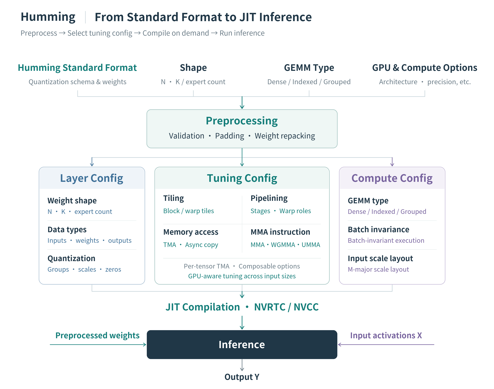
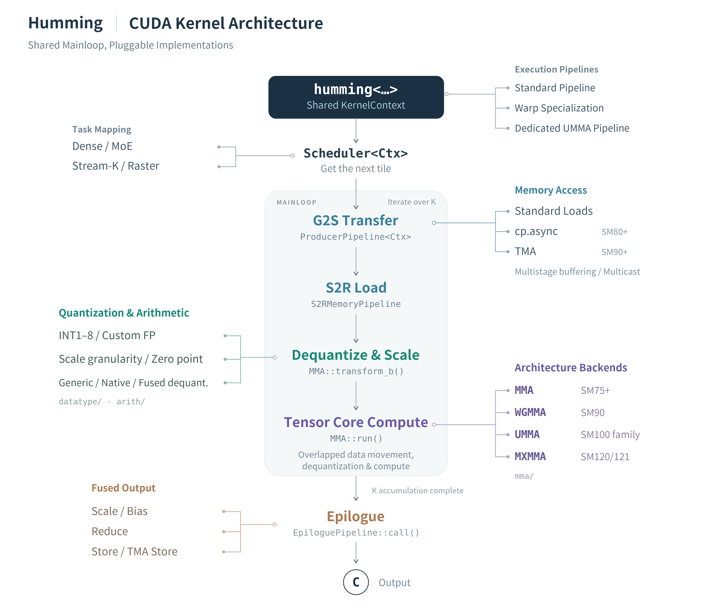
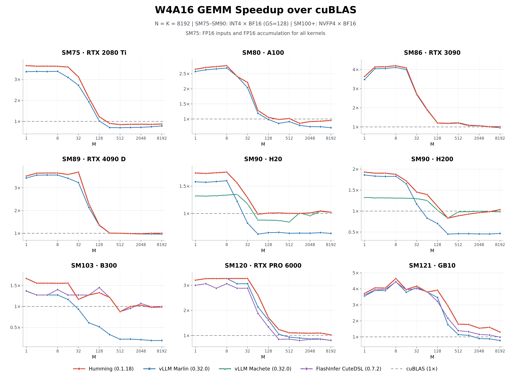

SHARE
Teams serving large models should read this. It tackles a more basic problem in quantization: the hard part is often not squeezing weights into low bits, but that every extra format and every new GPU generation needs another kernel to write and maintain. Humming, open-sourced by Ant Group and the vLLM community, separates the description of a quantization format from how it executes on a given GPU, then compiles the needed kernel on the fly from shared CUDA components. The components are light, so compilation is fast: one W4A16 kernel on H200 takes 23.35 seconds with CUTLASS and 1.82 seconds with Humming. Speed holds up too: running DeepSeek-V4.1-Flash on eight H20s with the MoE layers switched to Humming W4A8, output throughput at concurrency 64 rises from 442.37 to 633.94 tokens per second. Maintenance cost scales with components, not format combinations, which suits inference teams supporting many quantization formats across several GPU generations.
What problem is it actually solving?
Start with a common situation (illustrative). A team serves three kinds of model in production: an INT4 dense model exported with GPTQ on A100, an MoE model with MXFP4 weights on H200, and an NVFP4 MoE model about to move to B300.
| Model (illustrative) | Weight format | Activations | GPU | Workload |
|---|---|---|---|---|
| Dense generation model | INT4, one scale per 128 weights | BF16 | A100 | Dense |
| MoE model A | MXFP4 | BF16 or FP8 | H200 | MoE |
| MoE model B | NVFP4 | NVFP4 | B300 | MoE |
Each row may need its own kernel: how weights are decoded, how scales are applied, how data moves in from memory and which Tensor Core instruction runs all differ across the three rows. With dedicated kernels, every extra format, GPU or workload type multiplies the number of implementations, and each one needs its own weight preprocessing, selection logic, framework adapter and tests. A good optimization then has to be copied into several implementations.
The post puts it plainly: the memory and compute that quantization saves only become lower latency and higher throughput with efficient kernels, and prefill, decode and MoE with uneven expert loads each stress compute and bandwidth differently. Humming's answer is to split "format description" from "execution choice" and assemble kernels from shared components.
The big picture: from a unified format to on-the-fly compilation

The path has four steps, each producing what the next one needs:
- Convert to a unified format: models exported by various quantization tools are organized into Humming's own standard format.
- Preprocess: validate parameters, pad dimensions and repack the weights into a layout the target kernel reads well.
- Set three configs: describe what the layer is, which multiplication to run, and how to schedule it on this card.
- Compile on the fly and cache: assemble the shared components into a dedicated kernel per the three configs; compiled kernels are cached and used directly at inference.
The key division of labour: the format description answers what these numbers are, and the configs answer how to compute them on this card. Quantization parameters are written into the configs and also limit which execution options can be chosen, but one format description can be paired with different execution choices on different cards. Let's take them apart.
Step one: why unify the format description first?
Models exported by different quantization tools differ in numeric format, parameter organization and weight layout. If kernels faced these export formats directly, every new tool would mean changing the kernel entry point.
Humming splits a quantization scheme into independent parameters: the weight format, how large a group of weights shares one scale, the scale's own data type, whether there is a zero point, and whether there is a second-level scale. Activations describe their own format separately. These parameters combine freely within format and hardware limits, and the original scheme's quantization meaning is preserved.
Take the first row of the table (illustrative): it becomes "INT4 weights, one scale per group of 128 weights, BF16 scales, symmetric with no zero point; BF16 activations". The MXFP4 MoE model just changes a few parameter values; the way it is described stays the same. For the inference framework, models from different sources now have a single entry point.
The post also mentions a small optimization: a floating-point format with zero exponent bits represents exactly the same values as a symmetric integer of the same width. For example, INT8 without -128 and float8e0m7 both represent only -127 to 127. Humming automatically stores eligible symmetric integer weights in this format so that dequantization is faster.
Step two: three configs and on-the-fly compilation
Once the format is unified, Humming still has to decide how this layer runs on this card. It describes a kernel with three configs:
| Config | Question it answers | Contents |
|---|---|---|
| Layer Config | What is this layer | Tensor shapes, data types, quantization parameters, target architecture |
| Compute Config | Which multiplication | GEMM type (Dense, or Indexed / Grouped for MoE), whether batch invariance is required (the same input gives bit-identical results no matter which requests it is batched with), input scale layout |
| Tuning Config | How to schedule on this card | Tile size, pipeline stages, whether warps specialize, how data is moved, which Tensor Core instruction, concurrency and scheduling |
Why not precompile every kernel? There are too many combinations, and the best choice changes with input size. Input size here is M, the number of activation rows in the matrix multiplication, roughly the number of tokens computed together in a batch. The post's example: at small M, a multistage pipeline using async copies (cp.async) with ordinary MMA (matrix multiply-accumulate) instructions can be faster; at large M, TMA (the hardware bulk-copy unit from Hopper on) with Blackwell's UMMA (its Tensor Core matrix instruction) gives higher throughput. Both paths are generated from the same configs and components.
Does every request trigger a recompile? No. By default Humming uses device-specific heuristic rules to prepare one config per range of M. It compiles them in parallel during model warmup. At runtime it only checks which range the current M falls in and dispatches to that kernel. In the post's test, compiling and loading kernels covering all supported M sizes for one layer's GEMM takes about 2–4 seconds. A small walk-through (illustrative): during decode M=1 falls in the "small M" range and uses the cp.async kernel; a long-prompt prefill with M=4096 falls in the "large M" range and switches to the TMA kernel. Both were compiled at warmup.
Fast compilation is what makes this design work. On H200 with CUDA 13.4 and compilation caches disabled, one W4A16 kernel, built with CUDA's own compiler in both cases, takes 23.35 seconds with CUTLASS and only 1.82 seconds with Humming; with CUDA's runtime compilation library instead, Humming takes only 1.88 seconds. Because one compile takes only about two seconds, preparing several dedicated kernels per workload pays off; at twenty-plus seconds each, warmup would drag on. The cost is that these heuristics will not pick the best option for every shape, and the post itself lists autotune as the next step.
Step three: shared components, and why maintenance scales with components

Inside the kernel is a fixed main loop, and every stage can swap its implementation. Read the figure by the options hanging off both sides:
- Numeric processing absorbs differences between quantization formats: bit width, integer or floating point, scales and zero points. Dequantization and scaling happen inside the kernel together with computation, without a separate write back to memory.
- Memory and compute backends absorb differences between GPU architectures: older cards use ordinary loads or cp.async, Hopper onward can use TMA and multicast. Tensor Core instructions are also picked per architecture: ordinary MMA from Turing to Ampere, WGMMA (a matrix instruction issued jointly by a group of warps) on Hopper, UMMA on datacenter Blackwell such as B300, and MXMMA (the matching matrix instruction for that generation) on workstation and personal-computer Blackwell.
- Task mapping and scheduling absorb the difference between dense and MoE: each GEMM type uses its own scheduling logic, and scale and bias can be folded into the final output stage. MoE's Indexed and Grouped paths are meant for cases where tokens are spread across experts and each expert's workload changes with load; the post does not say how these two paths use routing information to read tokens and expert weights and then map results back to each token.
At compile time only the implementations chosen by the configs are assembled; unused branches are removed. Back to the opening table (illustrative): three weight formats, three GPU generations and two workload types need up to 3×3×2=18 implementations with dedicated kernels; with components, it is 3 numeric variants plus 3 backends plus 2 schedulers, 8 component variants in total. A new format only touches the numeric group, a new GPU generation only touches the backend group, and improving a shared component benefits every config that uses it. That is what "maintenance scales with components" means.
Store in 4 bits, compute in 8: W4A8-MXFP4
More and more models ship MXFP4 weights directly, yet GPUs before Blackwell have no Tensor Core that computes MXFP4 natively. Conventional approaches get held back by dequantization and scaling overhead at larger M.
Humming keeps 4-bit weights in memory; while loading them the kernel quickly converts them in place into a format the GPU can compute directly, which the post says is INT8 or FP8. The W4A8 benchmark uses the FP8 route: once weights are in FP8, they are multiplied with FP8 activations on the FP8 Tensor Cores. The post does not say whether each MXFP4 group's scale is multiplied into the weights during conversion or applied after the multiplication; it only says dequantization and scaling both happen inside the kernel, without a separate write back to memory. Why does this help? A 4-bit weight takes half a byte and FP8 takes 1 byte, so each pass over the weights moves about half as much data from memory; small-M work like decode is mostly bound by reading weights, so the saving lands right on the bottleneck.
The comparison is against DeepGEMM W8A8: at small and medium batch sizes, Humming W4A8 reaches about 4.2× on H20 and about 4.5× on H200, also clearly faster than Humming's own W8A8. This shows that on older cards the benefit of 4-bit weights comes mainly from reading less memory, not from faster arithmetic.
Results: kernel benchmarks and end to end

The vLLM community ran the kernel benchmarks, with M taking every power of two from 1 to 8192 and the L2 cache cleared before each measurement; MoE speedups use the sum of the Gateup and Down GEMM latencies.
- Dense W4A16: at small batch sizes it is about 3–4× faster than cuBLAS on several cards; at large batch on H200 it is about twice Marlin, and more than three times in some B300 shapes. So the advantage is not limited to decode; large-M work like prefill does not fall behind either.
- MoE W4A16: on B300 the Grouped path for MXINT4 (4-bit integers sharing a scale per small block) and NVFP4 reaches about 5× Marlin at large batch. Tokens per expert vary with load in MoE, so this shows its MoE scheduling works well at large batch.
- W8A8: at small and medium batch on H20 and H200, about 2.6× and 2.5× DeepGEMM Contiguous. FP8 W8A8 was already a mature Hopper path, so further gains mean the benefit does not come only from low-bit formats but also from data movement and scheduling.
- B300 native microscaling formats (MX, low-precision formats where each small block of numbers shares one scale): W8A8, W4A8 and W4A4 reach about 1.25×, 1.6× and 1.4× DeepGEMM at the same precision. The gains are clearly smaller than on Hopper, because here the competitor can also use native low-precision instructions.
The end-to-end test runs DeepSeek-V4.1-Flash on eight H20s (TP=8), keeps the MXFP4 weights unchanged, and only switches MoE from Marlin W4A16 (BF16 activations) to Humming W4A8 (FP8 activations with one scale per token). The post does not say which module produces these FP8 activations and per-token scales, or at which step; but the table below is measured on the whole machine, so that step's cost is already included:
| Concurrency | Backend | Output throughput (tokens/s) | Mean TTFT (ms) | Mean TPOT (ms) |
|---|---|---|---|---|
| 1 | vLLM Marlin W4A16 | 88.30 | 543.13 | 9.24 |
| 1 | Humming W4A8 | 100.77 (+14.1%) | 383.80 (-29.3%) | 8.46 (-8.5%) |
| 8 | vLLM Marlin W4A16 | 287.04 | 2049.81 | 19.90 |
| 8 | Humming W4A8 | 383.04 (+33.4%) | 1386.91 (-32.3%) | 15.49 (-22.2%) |
| 64 | vLLM Marlin W4A16 | 442.37 | 5467.35 | 123.25 |
| 64 | Humming W4A8 | 633.94 (+43.3%) | 3882.94 (-29.0%) | 85.70 (-30.5%) |
Throughput gain grows from 14.1% at concurrency 1 to 43.3% at concurrency 64, and time to first token drops by about 30% at every level. Higher concurrency means larger MoE GEMMs, so more of the kernel's advantage shows up on the whole machine; high-concurrency online services benefit most.
Where I think it falls short
First, end to end covers one model on one machine, and two things changed at once. The 14%–43% includes both the kernel itself and the drop in activations from BF16 to FP8; the post gives only throughput and latency, so model quality with FP8 activations is yours to measure. Before going live you need your own quality evaluation.
Second, the benchmark claims are mostly "about N× at small and medium batch", and the advantage narrows at large M. In the W4A16 figure, Humming on H200 also falls below cuBLAS's 1× line around M=256; on SM121 (the Blackwell architecture in personal AI machines such as the GB10 (a desktop AI chip)) at small batch, it beats FlashInfer CUTLASS by only about 19% for W4A8 and about 9% for W4A4. Prefill-heavy workloads will see smaller gains than the headline numbers.
Third, execution configs are chosen by device heuristics. The post admits model shapes, quantization configs and device resources combine in too many ways for the rules to be optimal everywhere, and autotune is still planned. Unusual layer shapes may need a hand-tuned Tuning Config.
How a recommendation or search team could try it
More and more recommendation and search teams run LLMs in production: generative retrieval, LLM ranking, query rewriting. One way to try it:
- Swap only the backend on your existing vLLM: vLLM 0.29.0 onward ships Humming; turn it on with
--linear-backend humming --moe-backend humming, leaving model and quantization format untouched. Compare TTFT, TPOT and throughput on the same load-test traffic to see the pure kernel gain. - Then try activation precision: if an MoE model's weights are already MXFP4, try W4A8 on Hopper (set MoE activations to FP8). This changes the numerics, so run offline quality evaluation alongside (recall, ranking AUC or human review) to confirm the throughput gain did not cost quality.
- Accept by traffic shape: load-test decode-heavy (short input, long output) and prefill-heavy (long prompt, short output) traffic separately. If prefill dominates and gains are small, check against the second limitation above whether the large-M range picked the right config.
- Inventory your kernel maintenance surface: if the team maintains in-house kernels for several quantization formats, list them as a "format × GPU × workload" table and see which a single Humming config could replace, cutting the number of implementations to maintain.
Verdict
The key takeaway: the bottleneck in quantized inference is often not the format itself but the cost of maintaining a kernel for every combination; splitting format description, execution config and CUDA components apart solves coverage and performance at the same time.
| Dimension | Assessment |
|---|---|
| Problem importance | High. Quantization formats and GPU generations keep multiplying, and dedicated-kernel maintenance grows with the number of combinations |
| Novelty | Medium-high. Unified description plus components is not a new idea, but taking it across Turing to Blackwell, dense and MoE is rare |
| Evidence | Medium. Kernel benchmarks are broad, but end to end has one model on one machine and no quality evaluation |
| Engineering cost | Low. Built into vLLM 0.29.0 onward; switching backend is one launch flag; the wheel is about 500 KB |
| Worth trying | Yes. Teams already serving quantized MoE models on vLLM can swap the backend and load-test at near-zero cost |
| Best fit | LLM online services with mixed quantization formats, mixed GPU generations and high concurrency |
How did this read for you?
Hoot made a note. Thanks for the feedback.
One tap, no sign-in; tap again to undo. Only anonymous counts are kept, never who you are.
Discussion
Add experiment details, reproduction notes or a different take. Requires a GitHub sign-in.
Loading the discussion…